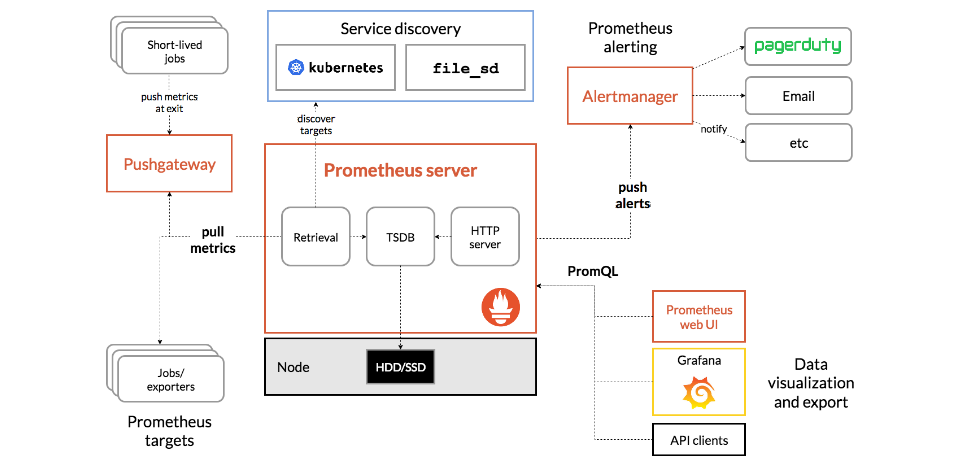

prometheus 无默认值监控项和alertmanager 告警抑制
prometheus 无默认值监控项和alertmanager 告警抑制.
1、配置文件示例
起初自己设定的配置是两个单纯的static_configs，用自带的labels进行向量匹配。
Prometheus
global:
scrape_interval: 15s # Set the scrape interval to every 15 seconds. Default is every 1 minute.
evaluation_interval: 1m # Evaluate rules every 15 seconds. The default is every 1 minute.
# scrape_timeout is set to the global default (10s).
alerting:
alertmanagers:
- static_configs:
- targets:
- localhost:9093
# Load rules once and periodically evaluate them according to the global 'evaluation_interval'.
rule_files:
- "/opt/soft/alertmanager-0.25.0.linux-amd64/local_rules.yml"
scrape_configs:
- job_name: "pushGateway"
static_configs:
- targets: ["localhost:9099"]
#relabel_configs:
# - source_labels: [srcIp]
# separator: ':'
# regex: '(.*)'
# replacement: '${1}'
# target_label: instance
- job_name: "windows_prometheus"
static_configs:
- targets:
- 192.168.61.153:9182
- 192.168.62.238:9182
- 192.168.62.157:9182
- 192.168.62.17:9182
- 192.168.66.175:9182
- 192.168.62.54:9182
- 192.168.62.94:9182
- 192.168.62.87:9182
- 192.168.62.52:9182
- 192.168.62.224:9182
- 192.168.62.222:9182
- 192.168.62.185:9182
- 192.168.62.71:9182
- 192.168.62.110:9182
- 192.168.62.88:9182
- 192.168.62.28:9182
- 192.168.62.175:9182
- 192.168.62.247:9182
relabel_configs:
- source_labels: [__address__]
separator: ':'
regex: '(.*):(.*)'
replacement: '${1}'
target_label: src_instance
2、pushGateWay无默认值
pushGateWay 的数据层面, pushgateway 的数据来源是推送到pgw，然后prometheus 再去拉取pgw对应的metric。所以pgw跟exporter就有个区别，pgw没有默认值。 
{kind=link}
那么在当上图中 short-lived jobs没有向pgw推送数据时，pgw不知道是否存在该监控向量。所以此时对应监控项用来判断应用的存活状态就多少有些麻烦。
3、告警规则示例
告警规则
groups:
- name: local_rules
rules:
- alert: InstanceDown
expr: up{job="windows_prometheus"} == 0
for: 2m
labels:
severity: error
annotations:
summary: "Instance {{ $labels.instance }} down"
description: "{{ $labels.instance }} of job {{ $labels.job }} has been down for more than 5 minutes, current value: {{ $value }}"
- alert: auto_wx_friend
expr: (job_last_success_unixtime{exported_job="auto_wx_friend_from_pgw"} or (up{job="windows_prometheus"} * 0)) == 0
for: 2m
labels:
severity: error
annotations:
summary: "auto_wx_friend down {{ $labels.src_instance }} {{ $labels.job }}"
description: "{{ $labels.src_instance }} {{ $labels.job }} (current value: {{ $value }})"
4、监控数据推送至pgw的脚本
告警规则中，InstanceDown是exporter的，auto_wx_friend是pgw的。而在prometheus中的src_instance是为了尝试向量匹配，所以得有相同labels。
脚本
from prometheus_client import CollectorRegistry, Gauge, push_to_gateway
import socket
class PushGateWayPrometheus:
"""
pushgateway
"""
def __init__(self):
self.registry = CollectorRegistry()
self.gateway = '192.168.60.203:9099'
# label 和 value 对应
self.label_name = ['src_instance', ]
self.src_ip_label_value = socket.gethostbyname(socket.gethostname())
# 无需修改
self.job = 'auto_wx_friend_from_pgw'
def gauge_process_alive(self, metric_name: str, describe: str) -> None:
"""
如果对应值设置为1，则表示应用仍然存活
:param metric_name:
:param describe:
:return:
"""
g = Gauge(metric_name, describe, registry=self.registry,
labelnames=self.label_name)
g.labels(self.src_ip_label_value).set(1)
def push(self, metric_name: str, describe: str) -> None:
"""
推送对应的指标，如果有新的只需新增
:param metric_name:
:param describe:
:return:
"""
self.gauge_process_alive(metric_name, describe)
push_to_gateway(self.gateway, job=self.job, registry=self.registry)
PushGateWayPrometheus().push('job_last_success_unixtime', 'Last time a batch job successfully finished')
5、alertmanager 告警抑制
inhibit_rules:
- source_match:
severity: 'critical'
target_match:
severity: 'warning'
equal: ['alertname', 'instance']
# 抑制器配置
inhibit_rules: # 抑制规则
- source_match: # 源标签警报触发时抑制含有目标标签的警报，在当前警报匹配 status: 'High'
status: 'High'
target_match:
status: 'Warning' #
equal: ['alertname','operations', 'instance'] # 确保这个配置下的标签内容相同才会抑制，也就是说警报中必须有这三个标签值才会被抑制。
本文阅读量 次
评论
赞助一杯的绿茶😁